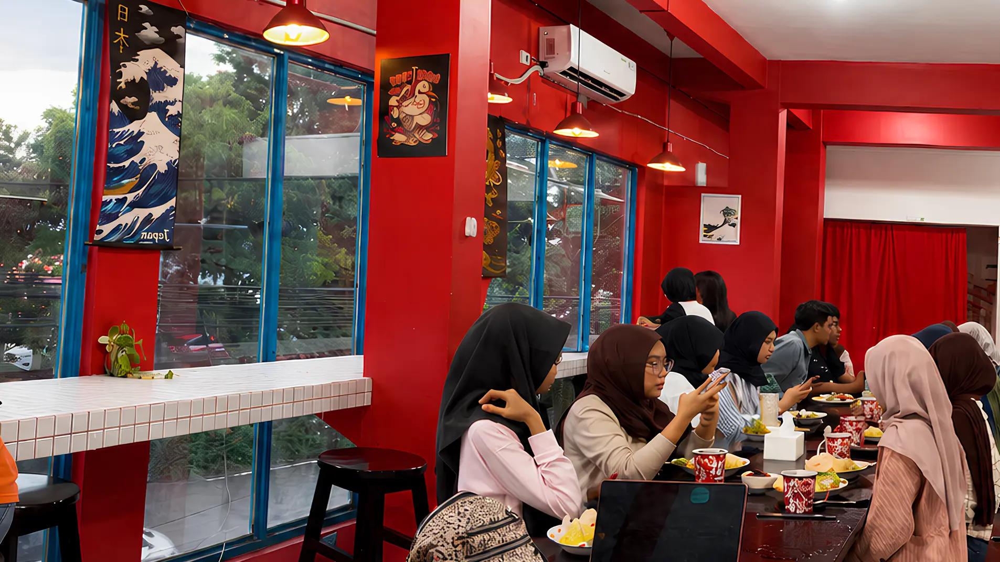
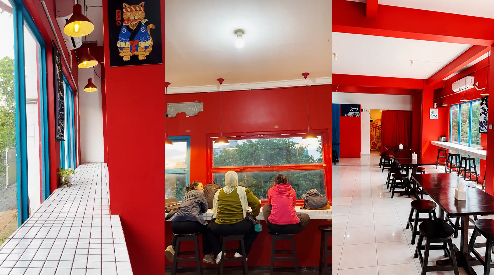
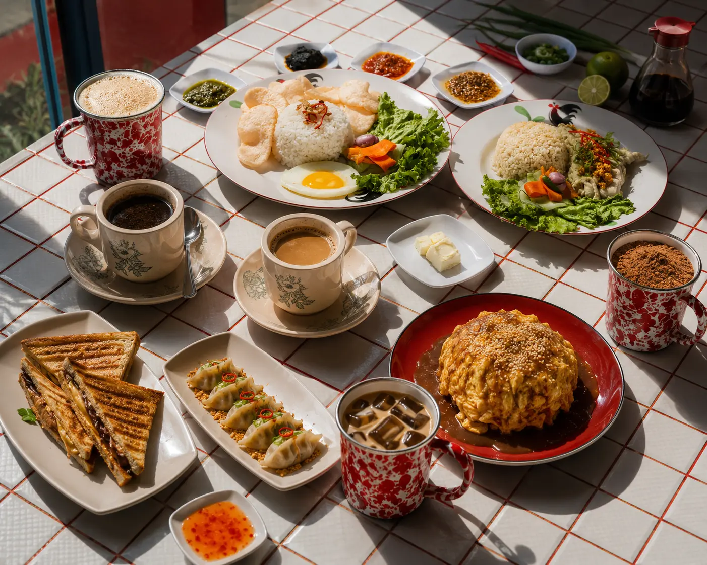
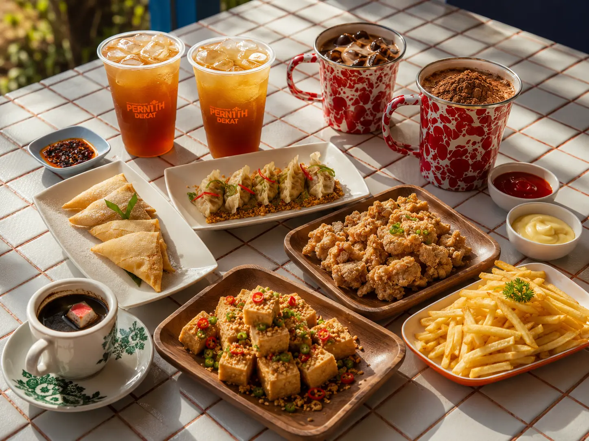

Lantai 2 Indoor AC
Area indoor ber-AC yang nyaman untuk nugas, kerja fokus, atau diskusi kecil tanpa kehilangan suasana kedai.

Coffee shop dan kopitiam di Manyar, Surabaya
Pernah Dekat adalah cafe dan kopitiam di Manyar, Surabaya. Lebih dari sekadar seduhan kopi, kami adalah saksi untuk setiap tawa, kolaborasi, dan obrolan yang pernah dekat.
Our story
Kisah kita dimulai secara resmi pada Agustus 2024. Sejak awal berdiri, visi kami bukanlah sekadar menyajikan hidangan di atas meja, melainkan menciptakan ruang inklusif yang menjembatani hubungan antar-manusia.
Kedai Pernah Dekat lahir dari kepercayaan bahwa ide-ide besar, pertemanan baru, dan momen kebersamaan yang hangat selalu berawal dari tempat yang nyaman.
Tempat untuk kembali dekat, bahkan ketika hari terasa jauh.
The space

Area indoor ber-AC yang nyaman untuk nugas, kerja fokus, atau diskusi kecil tanpa kehilangan suasana kedai.
Satu lantai smoking indoor untuk ngobrol lebih santai, menikmati kopi lebih lama, dan tetap terlindung dari cuaca Surabaya.
Lantai 2 dan lantai 3 sering digunakan untuk event, komunitas, nonton bareng, live music, atau gathering teman sefrekuensi.



Pertanyaan umum
Ya. Lantai 2 memiliki area indoor ber-AC yang nyaman untuk nugas, kerja fokus, atau diskusi kecil di kawasan Manyar, Surabaya.
Ada. Area smoking indoor berada di lantai 3 untuk pengunjung yang ingin ngobrol lebih santai dan menikmati kopi lebih lama.
Bisa. Lantai 2 dan lantai 3 sering digunakan untuk event, gathering komunitas, nonton bareng, live music, atau diskusi kecil.
Pernah Dekat buka setiap hari dari pukul 10.00 pagi sampai 02.00 dini hari.
Lokasi dan reservasi
Kami berada di Jalan Raya Manyar No. 29, Surabaya. Buka setiap hari sampai pukul 02.00 untuk Anda yang butuh ruang kerja, ruang temu, atau tempat melepas penat.
Amankan Mejamu Hari IniJalan Raya Manyar No. 29, Surabaya, Jawa Timur 60284
0822-8998-8224Jam Buka: Senin - Minggu, 10.00 pagi - 02.00 dini hari